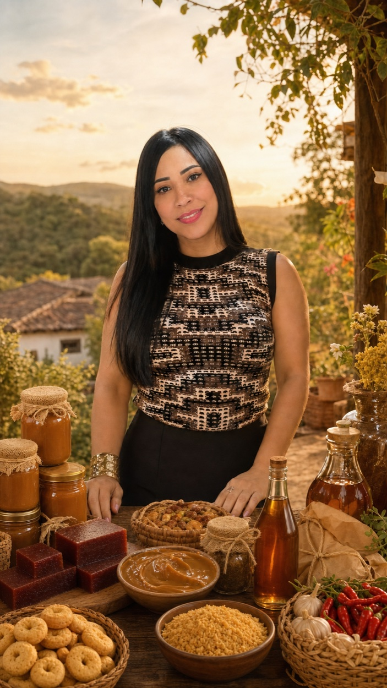
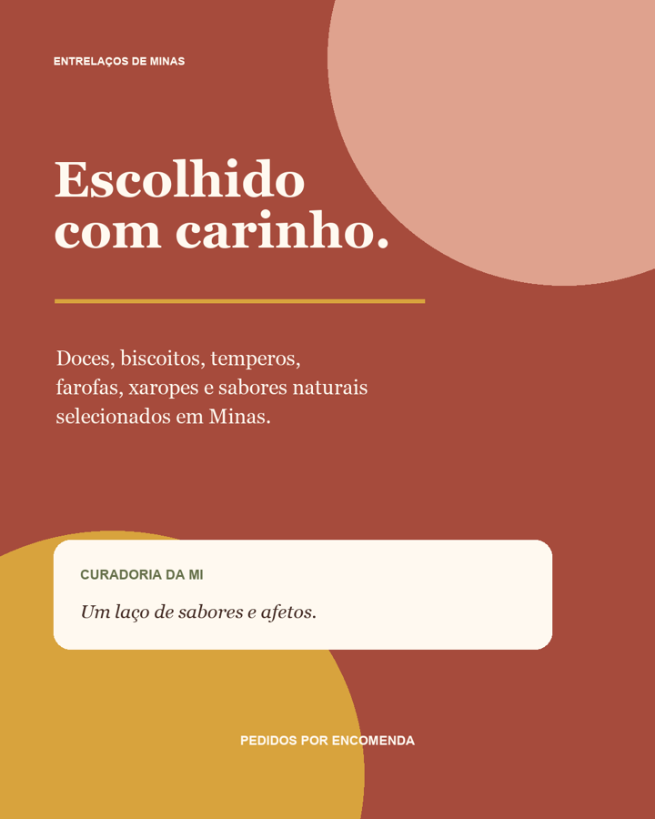

01
Adoça a vida
Doces mineiros
Receitas que lembram cozinha de vó, colher de pau e conversa demorada.
Quero conhecer ↗Da nossa origem para a sua mesa
Doces, biscoitos, temperos, farofas, xaropes e produtos naturais escolhidos com carinho — da região de Santa Luzia para criar laços por onde passarem.
Curadoria afetiva
Escolhas com origem, sabor e história.

Direto de Minas
Seleção sob encomenda
Feito com afeto
Da família para você
Nossa seleção
Uma curadoria pequena de propósito: cada produto entra porque vale a pena dividir.
Adoça a vida
Receitas que lembram cozinha de vó, colher de pau e conversa demorada.
Quero conhecer ↗Combina com café
Crocância, aconchego e aquele cheirinho que faz a casa inteira chegar à mesa.
Quero conhecer ↗Segredo da cozinha
Misturas cheias de personalidade para transformar o almoço de todo dia.
Quero conhecer ↗Cuidado natural
Saberes tradicionais e ingredientes selecionados para cuidar de dentro para fora.
Quero conhecer ↗✦ A seleção varia conforme cada remessa. É isso que torna cada chegada tão especial.

O laço por trás da marca
A Entrelaços nasceu de um caminho muito pessoal: minha mãe seleciona e envia os produtos da região de Santa Luzia, e eu, Mi, preparo cada encomenda para chegar até você.
Não é só sobre vender sabores mineiros. É sobre aproximar pessoas, valorizar nossa origem e transformar uma compra em memória boa — daquelas que ficam na mesa e no coração.
“Cada produto carrega um pouco da minha história, da minha mãe e da terra de onde viemos.” — Mi, fundadora e curadora
Do jeitinho mais simples
Conta para a Mi quais sabores quer receber na próxima remessa.
Você recebe disponibilidade, valores e previsão antes de fechar o pedido.
Os produtos vêm da região de Santa Luzia em uma remessa organizada.
Sua encomenda chega preparada com carinho para você aproveitar.
Nosso jeito de fazer
A próxima remessa começa aqui
Preencha rapidinho. Nós montamos a mensagem do seu interesse e você continua a conversa diretamente com a Mi.
Sem compra automática
Você só confirma depois de receber todos os detalhes.
Atendimento de verdade
A própria Mi acompanha sua encomenda.
Seleção limitada
Remessas menores para preservar qualidade e cuidado.
Dúvidas de quem já está com vontade
Não. A Entrelaços nasceu em Piracicaba, mas queremos levar os sabores de Minas cada vez mais longe. A disponibilidade e o frete são confirmados conforme sua cidade.
Você demonstra interesse, recebe o catálogo da remessa e confirma o pedido diretamente com a Mi. Tudo é combinado antes do pagamento.
Como trabalhamos com curadoria e remessas, a seleção pode variar. Assim você conhece novos sabores e cada envio continua especial.
Claro! Conte para a Mi o que procura. Se estiver ao alcance da nossa rede em Santa Luzia e região, vamos tentar incluir na próxima seleção.
Entre para a lista e seja a primeira pessoa a conhecer a próxima remessa.
Quero meu pedacinho de Minas →